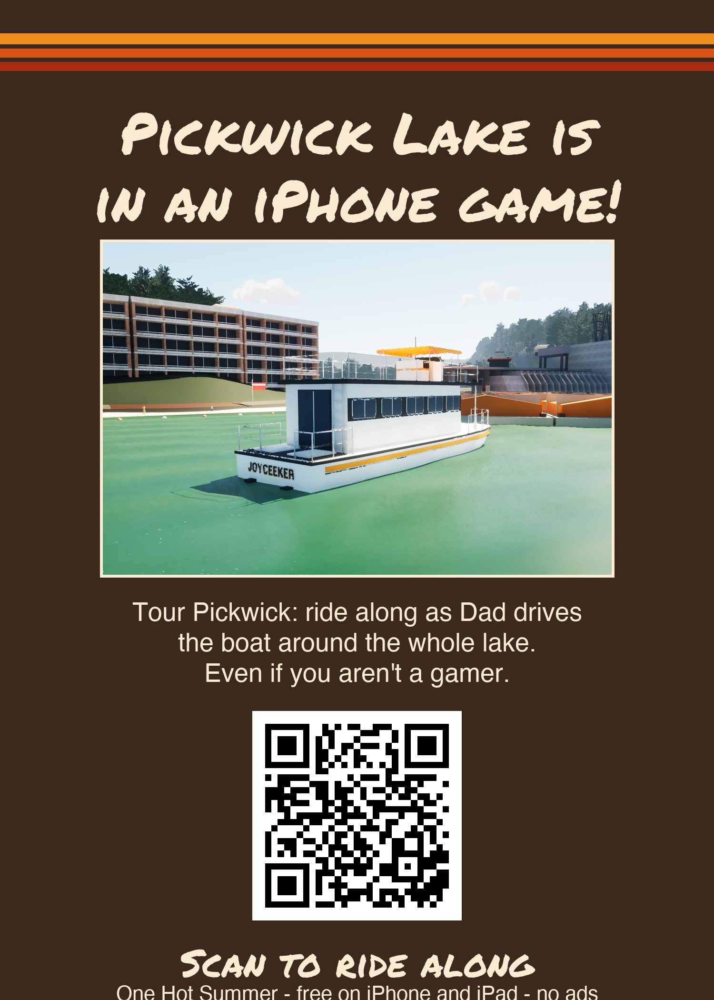
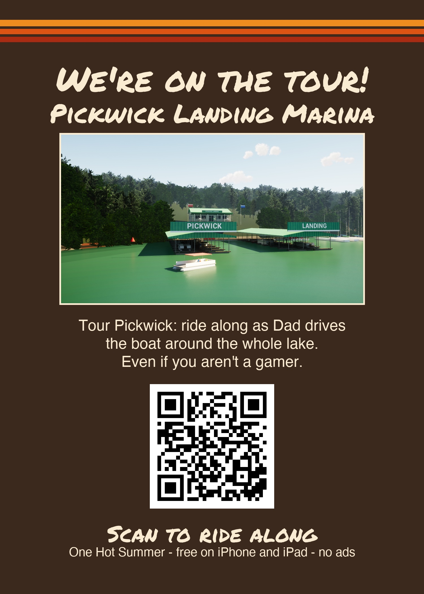
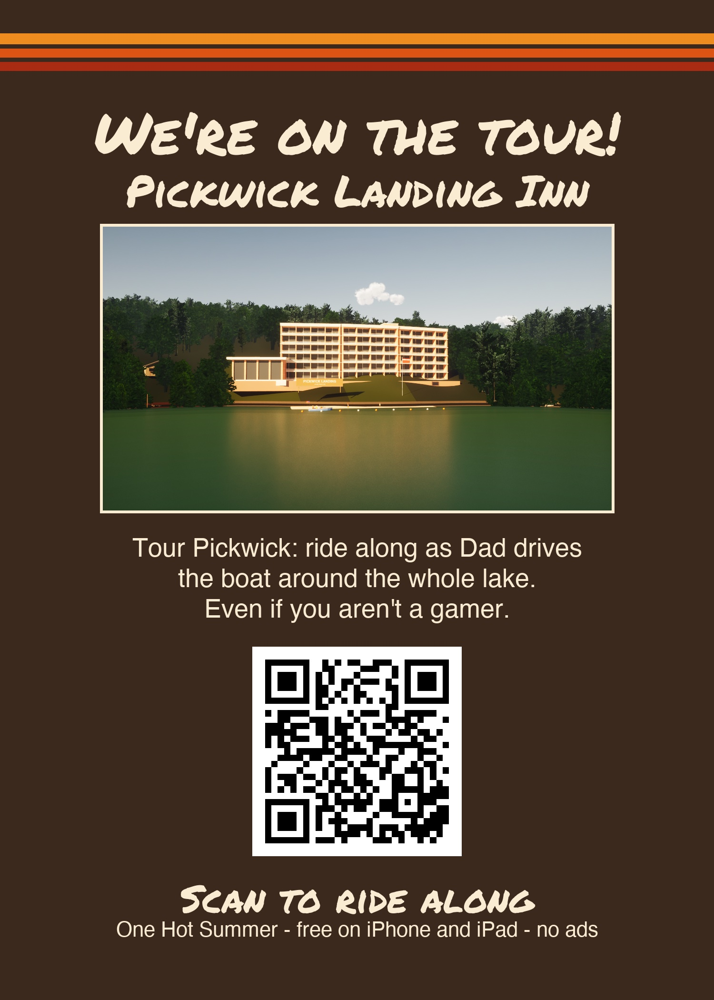
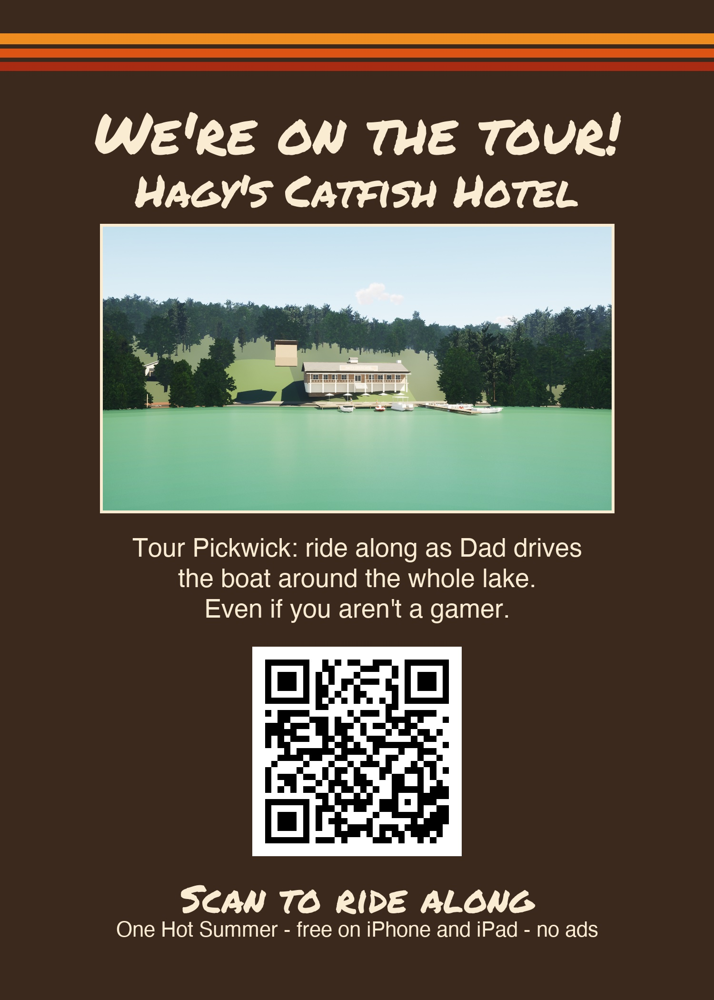
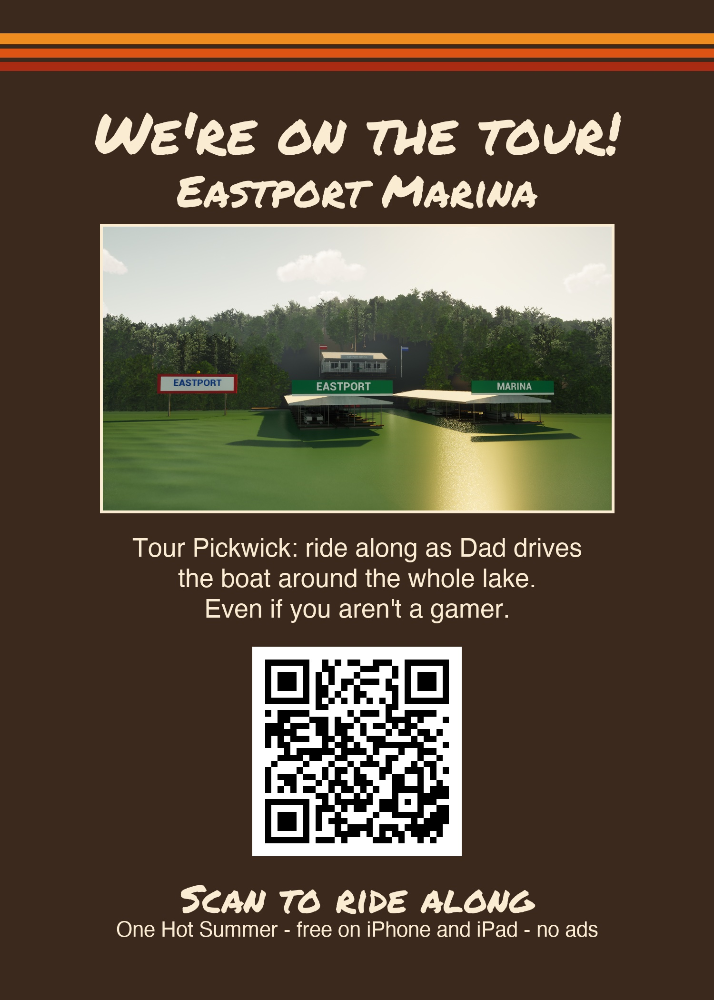
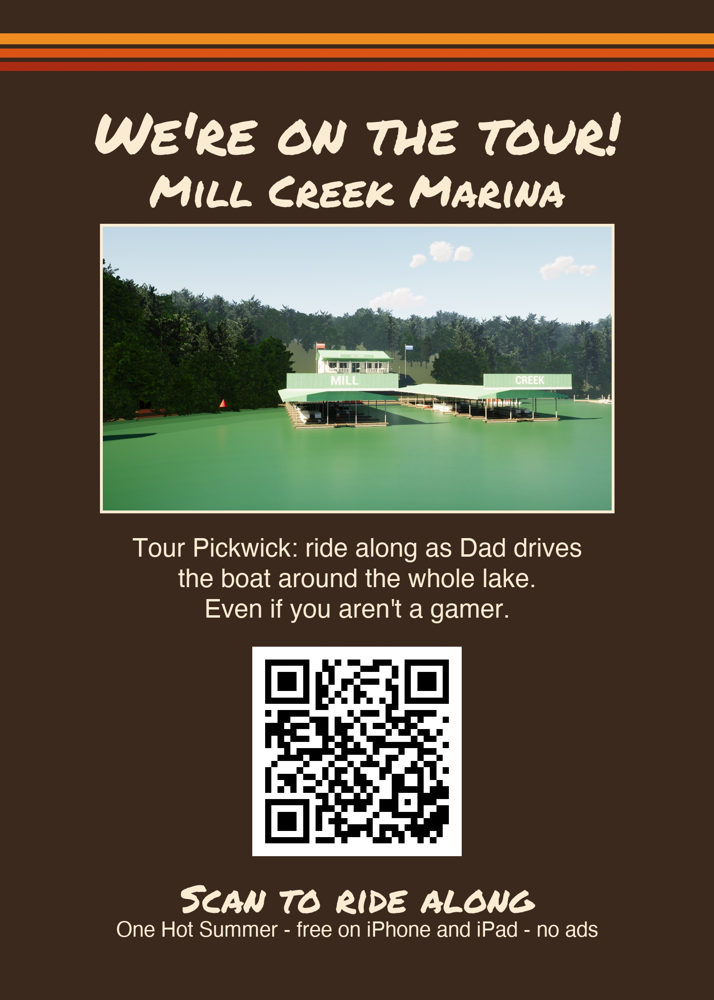
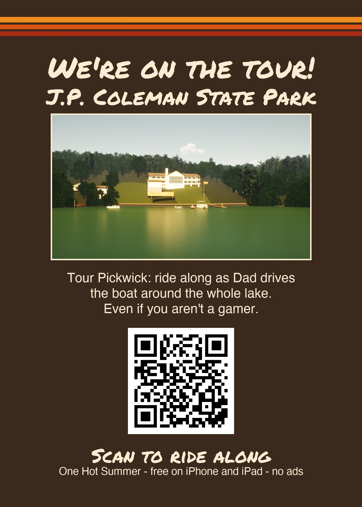
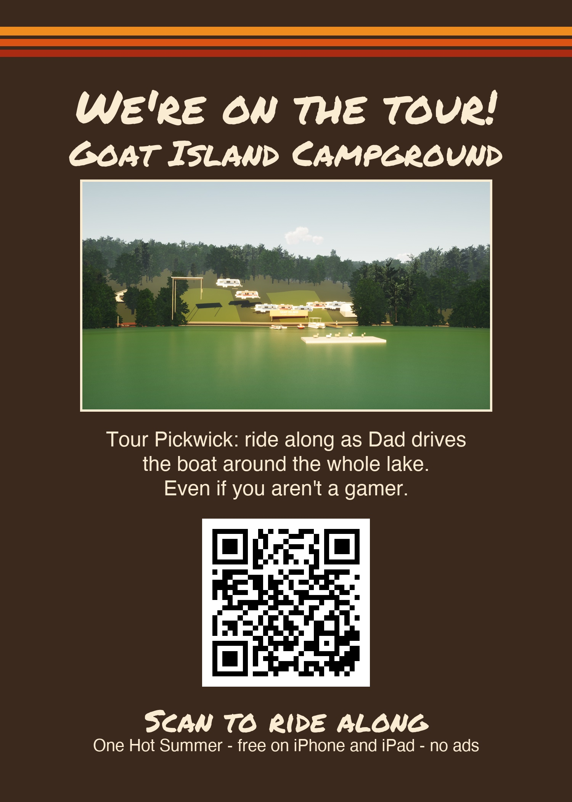
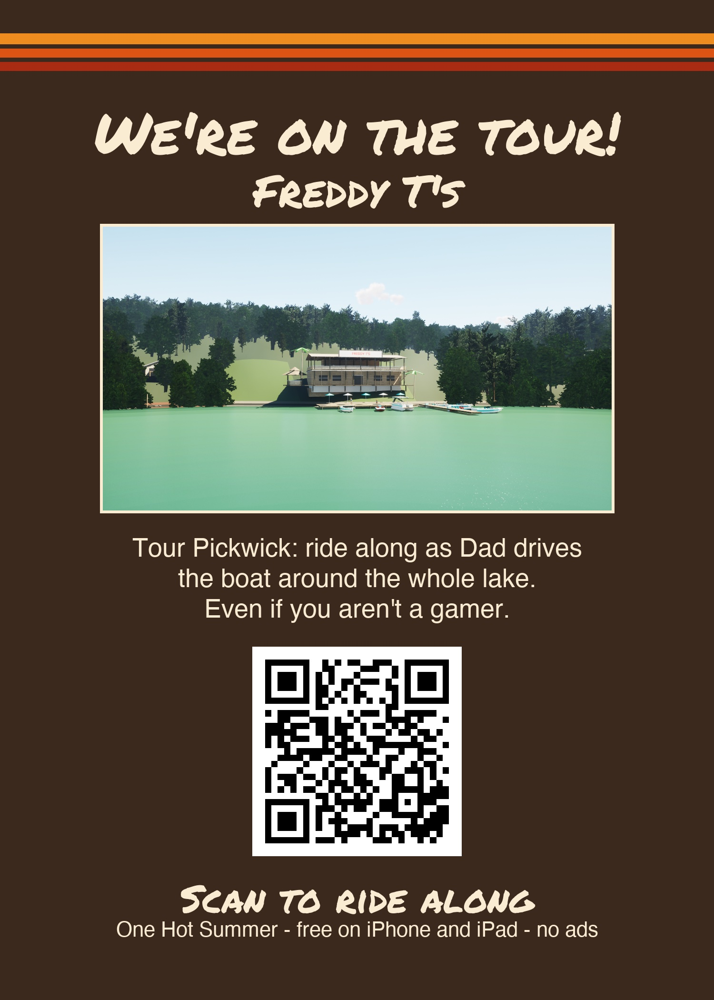
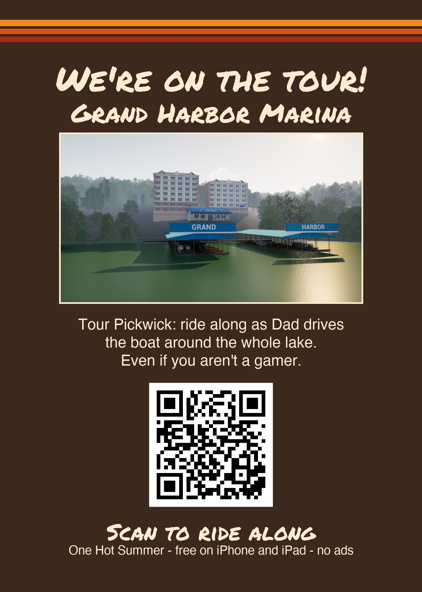

Not a gamer? Just ride along. One Hot Summer is a free iPhone and iPad game set on Pickwick Lake in the summer of 1990. Its Tour Pickwick ride-along takes you around the whole lake in the family boat - past the marinas, the state parks, Pickwick Dam and the lock, the beach coves and the places people stop to eat - with a true bit of lake history from Dad at the stops. You can stay awhile anywhere, or send a postcard to someone who misses the lake.
Get One Hot Summer on the App StoreFree. No ads, nothing to buy. There's a water-ski game in it too - a boy learning to ski over eleven days of summer, and a one-ski Buoy Run with weekly Game Center scores.
Pickwick Landing State Park and its marina and inn, Pickwick Dam and the lock, Hagy's Catfish Hotel, Dry Creek, Eastport, Mill Creek, J.P. Coleman State Park, Goat Island, Aqua Yacht, Freddy T's and Grand Harbor.
Free counter cards to print (5 x 7 inches) - scan the QR code to ride along:

Pickwick Lake (any place)
Pickwick Landing Marina
Pickwick Landing Inn
Hagy's Catfish Hotel
Eastport Marina
Mill Creek Marina
J.P. Coleman State Park
Goat Island
Freddy T's
Grand HarborScreenshots: press images. Questions: artjoyce@gmail.com.
Made by Art Joyce, who grew up skiing on Pickwick. Made with Claude, Anthropic's AI, and other AI tools. Place names are used with friendly thanks to the businesses and parks of Pickwick Lake; no endorsement implied.